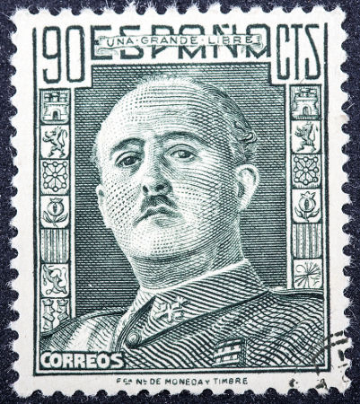

Franquismo
O Franquismo foi um regime político ditatorial que vigorou na Espanha entre os anos de 1939 e 1976.
Na década de 1930, a Espanha passou por uma guerra civil muito intensa. Estima-se que aproximadamente um milhão de pessoas tenha morrido durante os conflitos da ocasião. Os combates no território espanhol chegaram ao fim no ano de 1939, marcando a vitória de um grupo nacionalista que colocou no poder o general Francisco Franco.
Assim que se encerrou a guerra civil em território espanhol, teve início o maior conflito internacional do século XX, a Segunda Guerra Mundial. Francisco Franco, que recebeu apoio de Itália e da Alemanha durante a Guerra Civil Espanhola, tratou de retribuir a ajuda apoiando esses regimes fascistas que integravam um dos grupos durante a guerra.

O Franquismo era baseado na ditadura do líder que dava nome ao regime e tinha como característica uma forte repressão aos opositores do sistema. As bases do regime eram definidas pelo catolicismo e o anticomunismo. Mas apesar da afinidade com o capitalismo e o pólo ideológico liderado pelos Estados Unidos após a Segunda Guerra Mundial, o que marcou a Guerra Fria, a política econômica e a incompetência governamental do ditador Francisco Franco fizeram com que a Espanha parasse de crescer.
O governo personalista do Franquismo era apoiado ainda pela Igreja Católica e pelo Exército. Com isso, a ditadura comandava os poderes Executivo, Legislativo e Judiciário. Estes poderes eram mantidos somente para dar um indício de que se praticava uma democracia na Espanha, o que era creditado por algumas pessoas.
Fim do Franquismo
O Franquismo só chegou ao fim, como regime político, com a morte do ditador Francisco Franco em 1975, o que abriu espaço para a transição para uma democracia parlamentar. Em 2006, as Cortes Espanholas e o Parlamento Europeu condenaram o Franquismo com a justificava de que há provas suficientes para demonstrar que os direitos humanos foram violados durante o período de governo do ditador. Mas, mesmo assim, há ainda muitos seguidores e nostálgicos da ideologia Franquista na Espanha. Suas manifestações só não são mais visíveis porque foram proibidas em 2006 também.